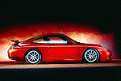
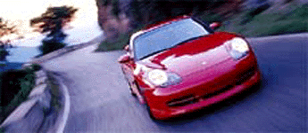
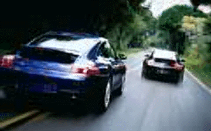

Porsche 911 Carrera / GT3

The GT3 is pictured above


Specs(911/GT3)
Price |
$65,030 / $95,000(in Germany) |
Top Speed |
174mph / 188mph |
Acceleration |
|
Engine |
|
0-30mph |
N/A |
Type |
Flat-6 w/ Variable intake timing, 24valve DOHC |
0-60mph |
4.9sec / 4.5sec |
Displacement |
3.4L(3387cc) / 3.6L(3600cc) |
0-100 |
N/A |
Power |
296hp@6800rpm / 360hp@7200 |
1/4 mile |
13.4sec/105.2mph / 12.8sec/112mph(est.) |
Torque |
258 lbs-ft@4600rpm / 273 lbs-ft@5000 |
Weight |
2,911 lbs |
Handling |
|
Gas mileage |
|
Skidpad |
.92g / N/A |
City |
17mpg / N/A |
600ft slalom |
68.7mph / N/A |
Highway |
27mpg / N/A |
Powertrain |
Rear engined, rear wheel drive, 6 speed manual / All wheel drive |
(? = incomplete data or unverified info, N/A = info Not Available)
Beyond the specs:
The new Porsche 911, the replacement for the fun but aging old 911 that most of us see when we think of Porsches. Porsche is well known for the amazingly precise handling of their cars, this new 911 is proof that it is possible to improve on the excellent of the old 911. While the old 911 had a tail happy nature, this new 911 understeers instead and it is nearly impossible to get the rear end of this car out. The 911 like always comes in a 2wd version and an AWD version, it also comes in the GT3 version (the modern Porsche 911 RS) with a bigger engine. New to the Porsche 911 is the PSM (Porsche Stability Management) option, which prevents the car from oversteer or understeer just like the stability management now on the Chevrolet Corvette. This is one exhilarating car with its precise steering and powerful flat six-cylinder engine. Also, note that its engine is no longer air-cooled but water cooled, this will result in more tuning potential as the replacement for the old discontinued Porsche Turbo will show. This car combines refinement, comfort, performance, and the classic but now more aerodynamic (a drag Cd of only .30) 911 shape in one very beautiful car.
~Oracle